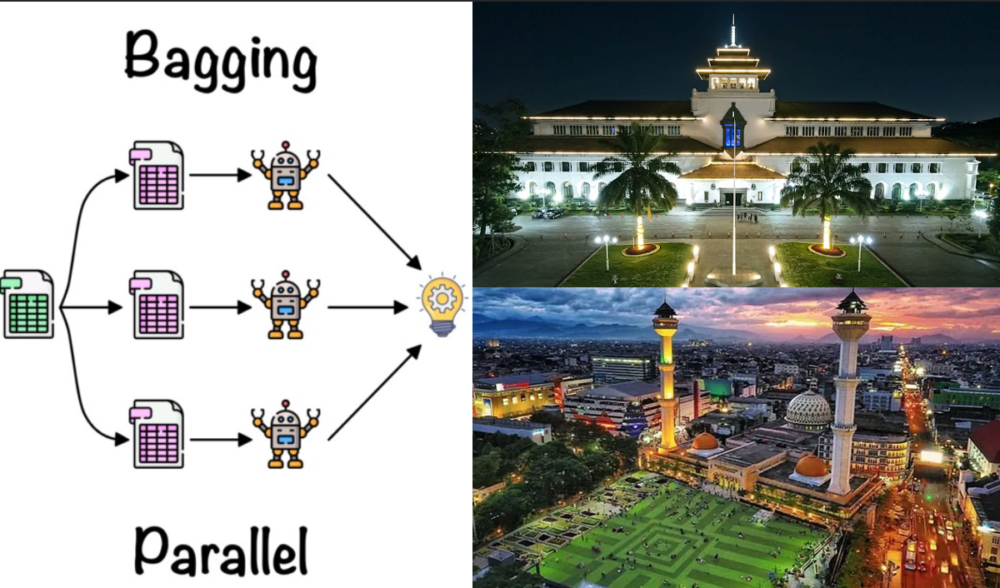
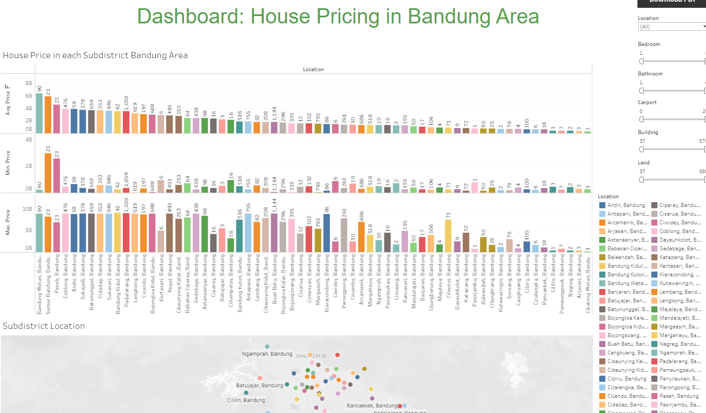

Data-Driven Chemical Engineer Seeking Transition to Data Analytics
Leveraging my analytical expertise in the footwear industry and a passion for data, I'm eager to transition my skills and experiences to a data analyst role.
My background in chemical engineering has equipped me with a strong foundation in problem-solving, process optimization, and data analysis,
while my additional certifications and licenses in data analytics demonstrate my dedication to mastering this field.
Data Analysis of House Price Analysis in Bandung Area

This project aims to find house price with certain criteria in Bandung area
View Project
Data Science of House Price Prediction Model in Bandung Area

This project aims to create model to predict house price in Bandung area
View Project
Dashboard Visualization of House Price in Bandung Area

This project visualize house price in Bandung area in interactive dashboard
View Project